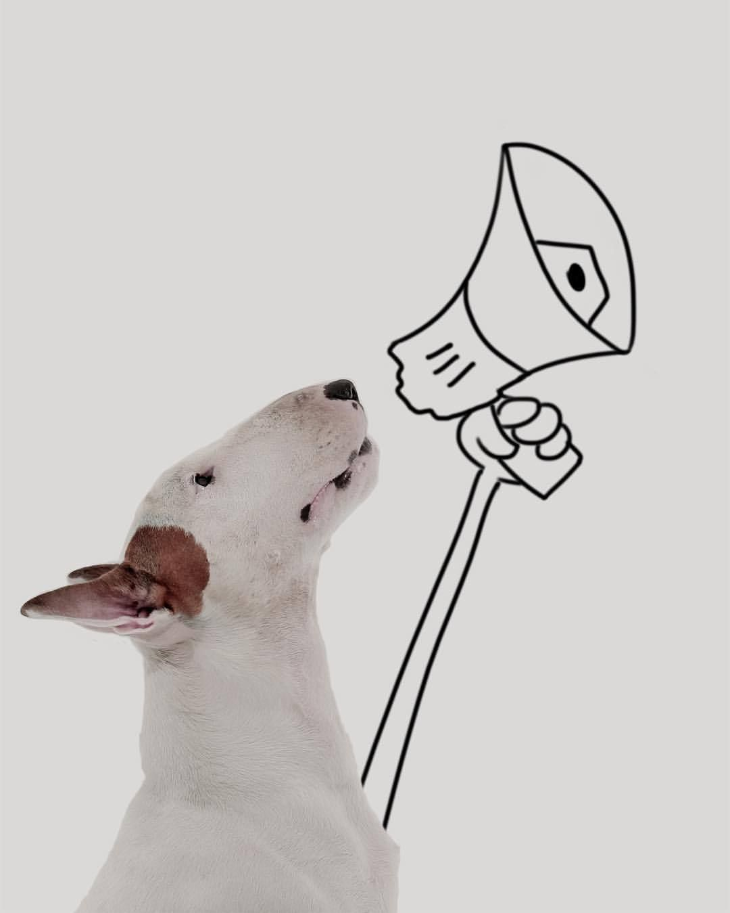

LINE · PAWRENT LIFF
สวัสดีคุณน้ำ ✿
ศุกร์ · 24 เม.ย. · 28° แดดอ่อน

ข่าวด่วนของบ้าน
วันนี้โมจิมีนัด
วันนี้โมจิมีนัด
ตรวจสุขภาพ 🎀
♡ สุขภาพน้อง ๆ วันนี้
ทั้งหมด ›✻ วันนี้ของบ้านเรา
1 เร่งด่วน
✓
เสร็จ
อาหารเช้าโมจิ 45g
เสร็จ 07:00
ตรวจสุขภาพโมจิ · ThonglorPet
อีก 42 นาที · พกสมุดไปด้วย
🛁
อาบน้ำเบนโตะ
18:00 · รอบที่ 3 ของเดือน
📓
บันทึกไดอารี่
21:30 · 14 วันแล้วยังไม่มีภาพใหม่
! ใกล้คุณ · รัศมี 5 กม.
ฟีด ›
HAPPY ENDING
ลูกชิ้นกลับบ้านแล้ว 🎉
ชุมชนช่วยแชร์ 114 ครั้ง · ใช้เวลา 4 ชม.
♥ 248💬 4211 นาทีก่อน
⚡ ทางลัดด่วน